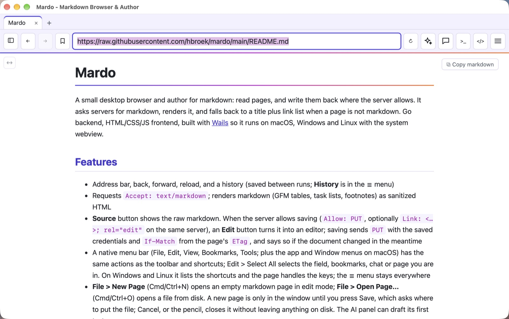
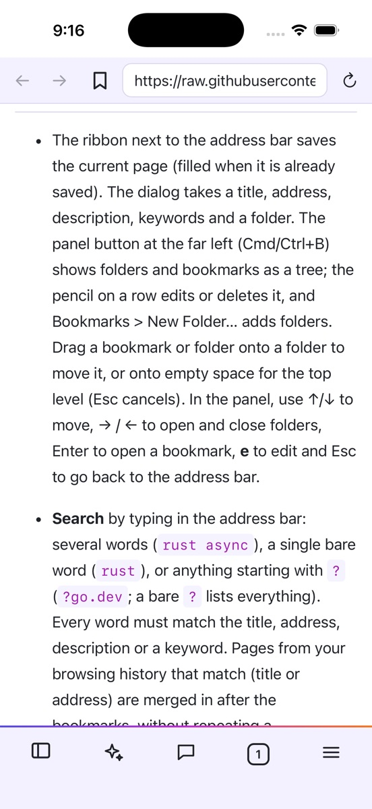

Read the web as markdown.
Write it back.
Mardo is a small browser and author for markdown. It asks servers for markdown, shows it cleanly, and saves your changes back where the server allows.
Free and open source (MIT). macOS, Windows and Linux. iPhone and iPad in development.


A browser that prefers markdown
Plain text pages load fast, read well and are easy to keep, copy and hand to an AI.
Asks for markdown
Sends Accept: text/markdown, and looks for a .md version of ordinary pages and a site's llms.txt. Tables, task lists and footnotes render properly.
Convert any page
No markdown version? One click maps an HTML page's headings, lists, links, images and tables to markdown, or has your AI model rewrite it.
Write it back
Where a server allows it, Mardo turns into an editor and saves with PUT, using your saved login and warning you if the page changed meanwhile.
Bookmarks that you own
Folders, descriptions, keywords and search by typing in the address bar. Keep them on your computer or in a LinkaGoGo folder.
Tabs and history
Tabs with their own history, restored on the next start. History is itself a markdown page you can save.
Private by default
Logins for each site go in your system keychain and are sent only to that exact site. Nothing is sent to an AI service until you allow it.
Open any .md file
Double click a markdown file to read it. Save any page as a .md file, or copy its markdown in one click.
Your look
Follows light and dark, with six color schemes, and a full-width mode for big screens.
A network console
See every request with its status, headers, timing and size. Cookie and token values stay hidden.
How a page gets here
Mardo asks first, falls back politely, and always tells you which one you got.
- Ask the server for markdown with a normal request.
- No luck? Look for the page's
.mdtwin, or the site'sllms.txt. - Still none? Show the title and links, with a Convert to markdown button.
# what Mardo sends GET /docs/guide Accept: text/markdown, text/x-markdown;q=0.9, … # what it can send back, when the server allows PUT /docs/guide If-Match: "3f9a…" Content-Type: text/markdown
AI that reads with you
Use the model you like: Claude, OpenAI, Gemini, a local Ollama, or any compatible server. On an iPhone it can be Apple Intelligence, running on the device itself.
Summarize, outline, translate
Condense a long page, find your way around it, or read it in another language. The result appears above the page.
Ask about the page
Chat with the page open. Conversations are saved per page and you can delete them any time.
Compare tabs
Pick several open pages and see what they agree on and where they differ.
Edit with words
Tell the AI what to change in a markdown page, review the highlighted differences, and keep or discard them.
Tidy your bookmarks
Suggest titles, keywords and folders. You review every suggestion before anything changes.
You decide what leaves
Page text goes only to the provider you choose, and only after you allow it. A model on your own computer sends nothing out.
Download
Pick your system on the latest release page. Or build it yourself from the source; the README shows how.
macOS
Apple silicon, macOS 13+Signed and notarized by Apple, so it opens without warnings.
Download for MacWindows
64-bitNot code-signed yet, so SmartScreen may warn about an unknown publisher: choose More info, then Run anyway.
Download for WindowsLinux
64-bit, GTK and WebKitA tarball with an installer script and desktop entry. Needs libgtk-3 and libwebkit2gtk-4.1.
iPhone and iPad
In developmentThe same core runs in an iOS app with a thumb-friendly layout and Apple Intelligence built in. Not released yet.
Follow on GitHub